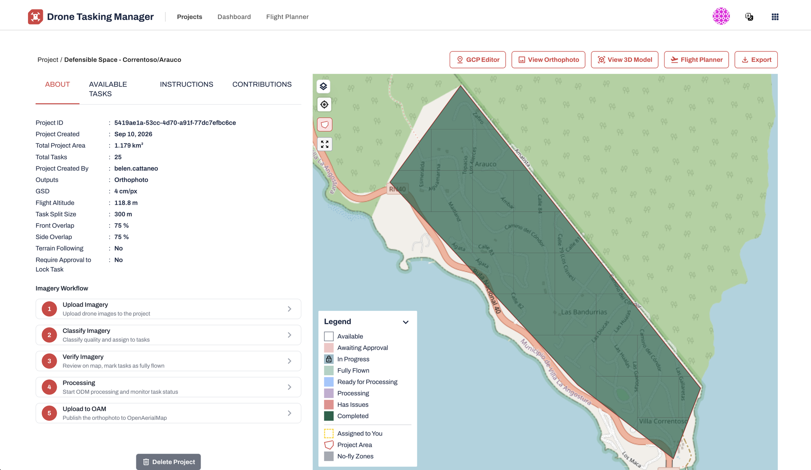
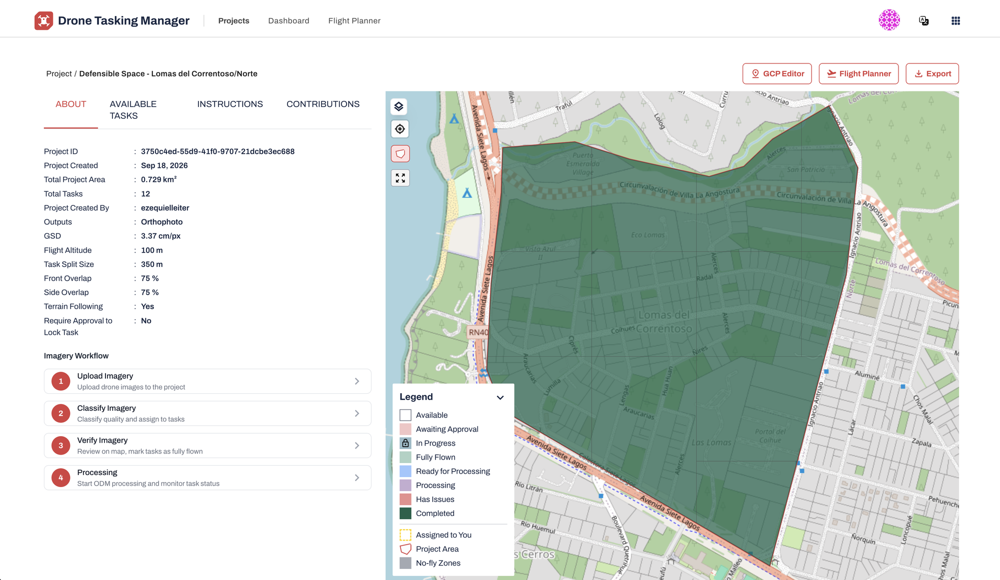
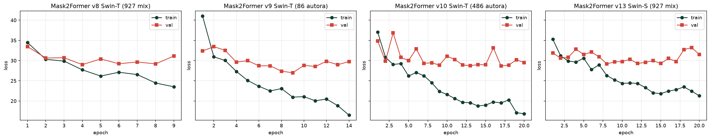
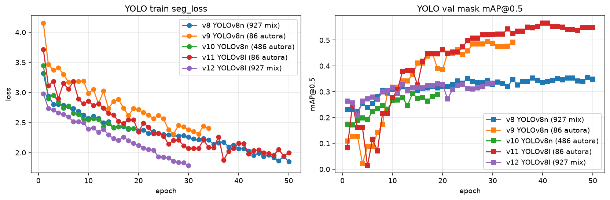
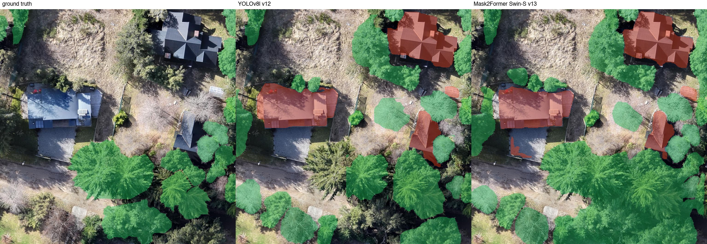
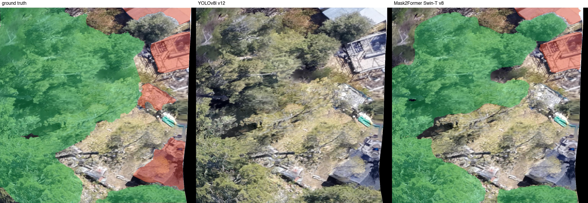
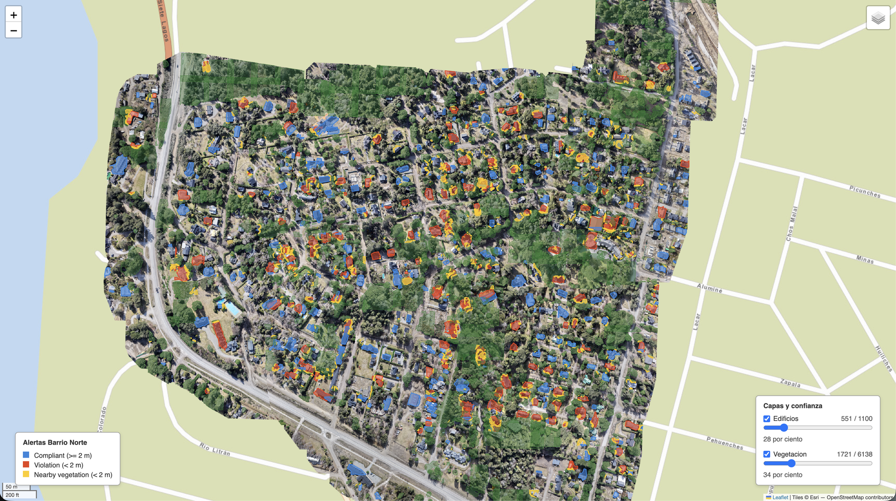

Mask2Former con backbones Swin-T y Swin-S) contra la familia CNN (YOLOv8-seg en tamaños nano y large) sobre segmentación por instancias de imágenes aéreas de dron de Villa La Angostura. El estudio es un ablation factorial sobre cuatro ejes: arquitectura, capacidad, dataset y evaluador, con un ground truth oracular de 50 imágenes etiquetado con criterios documentados como referente más limpio. El campeón de mAP es Mask2Former + Swin-T entrenado con 927 imágenes mixtas, con 0,643 mAP@0,5 sobre oracular. A parámetros equiparables (47 M vs 46 M) la ViT supera a YOLOv8l-seg por 11,1 puntos. El pipeline de producción va del tileado al mapa interactivo con alertas de incumplimiento del protocolo municipal de defensible space (regla de dos metros).
El trabajo aborda la detección automática de incumplimiento del protocolo municipal de defensible space en Villa La Angostura, Neuquén, mediante segmentación por instancias sobre imágenes aéreas de dron. El protocolo, publicado por la Dirección de Protección Civil para mitigar la propagación de incendios de interfase urbano-forestal, establece que ninguna vegetación debe encontrarse a menos de dos metros de una estructura habitacional. El pipeline produce, dada una ortofoto de dron, un mapa interactivo donde cada edificio aparece coloreado según su cumplimiento. El trabajo se enmarca en la convocatoria Open Call 2026 del Humanitarian OpenStreetMap Team (HOT).
Se aborda empíricamente comparando dos familias pre-entrenadas en COCO sobre el mismo dataset de dos clases (building y trees_and_bushes): YOLOv8-seg (CNN) y Mask2Former con backbone Swin (ViT). La comparación limpia requiere controlar cuatro variables: arquitectura, capacidad del modelo, dataset (volumen y ontología) y ground truth (GT) de evaluación. El estudio se armó como un diseño factorial que se describe en Sección 4.
Descripción breve de cada componente del sistema de la Figura 1:
Las imágenes se capturaron con un DJI Mini 5 Pro operado mediante el control remoto. La planificación de los vuelos se realizó con Drone Tasking Manager, una plataforma de HOT que divide un área de interés en tareas de vuelo acotadas, asigna cada tarea a un piloto, verifica la captura y gestiona el procesamiento posterior en OpenDroneMap (ODM) para generar el ortomosaico publicado en OpenAerialMap (OAM).
Se crearon dos proyectos cubriendo regímenes distintos del área de estudio:


Los parámetros se eligieron para obtener resolución espacial suficiente para distinguir vegetación individual y bordes de edificaciones (Ground Sampling Distance, GSD, en torno a los 3-4 cm/px) manteniendo tiempos de vuelo razonables. Los overlaps del 75% en ambos ejes garantizan la cobertura necesaria para que ODM reconstruya el ortomosaico sin huecos.
| Parámetro | Correntoso/Arauco | Lomas del Correntoso/Norte |
|---|---|---|
| Área total | 1,179 km² | 0,729 km² |
| Cantidad de tareas | 25 | 12 |
| Tamaño de tarea | 300 m | 350 m |
| Altitud de vuelo | 118,8 m | 100 m |
| GSD | 4 cm/px | 3,37 cm/px |
| Overlap frontal y lateral | 75% y 75% | 75% y 75% |
| Terrain Following | No | Sí |
El dataset se construyó a partir de la ortofoto (imagen aérea georreferenciada con corrección geométrica para escala uniforme) de cada tarea individual, no del mosaico global del proyecto, para evitar propagar errores de alineación entre tareas vecinas. En Correntoso/Arauco, que tiene la topografía más irregular, Terrain Following estuvo desactivado, lo que puede introducir cambios locales de escala en zonas de altitud variable. A partir de esa experiencia, en Lomas del Correntoso/Norte se activó el parámetro para mitigar esa deformación.
El etiquetado se realizó en Roboflow con Smart Polygon (SAM asistido). El proyecto inicial fue etiquetado íntegramente por la autora y el dataset expandido se produjo con el aporte del equipo Lawal.
| Dataset | Train | Val | Test | Anotaciones | Labelers |
|---|---|---|---|---|---|
| 86 autora | 50 | 18 | 18 | 1.236 | autora |
| 927 mix | 641 | 147 | 139 | 10.362 | autora + equipo Lawal |
| 486 autora | 332 | 77 | 77 | 4.116 | autora |
| held-out team | - | - | 441 | 6.246 | equipo Lawal |
| oracular | - | - | 50 | 1.270 | autora, criterios documentados |
El held-out team se construye con las 441 imágenes etiquetadas exclusivamente por el equipo Lawal, extraídas de los tres splits del 927 mix. Es verdadero held-out para los runs entrenados sobre "solo autora" (86 autora y 486 autora), que nunca vieron esas imágenes. Para los runs entrenados sobre 927 mix (que ya incluye las 441 del equipo), el held-out team mide ajuste al estilo del equipo más que generalización pura, y por eso se complementa con el oracular. El dataset oracular se construye re-etiquetando 50 imágenes del held-out team por la autora con criterios documentados por escrito. El oracular es independiente de los tres splits de entrenamiento (ningún modelo vio esas re-etiquetas) y además unifica la ontología de etiquetado, por lo que es el referente limpio para comparar runs entrenados sobre datasets distintos.
Se compararon dos familias pre-entrenadas en COCO, cada una en al menos dos tamaños para habilitar comparaciones a parámetros equiparables.
YOLOv8-seg (Ultralytics). Arquitectura one-stage anchor-free con backbone CSPDarknet, neck PANet y cabezal que combina coeficientes de máscara con un banco de prototipos compartidos (estilo YOLACT). Variantes evaluadas: YOLOv8n-seg (nano, 3,3 M, 1024×1024) y YOLOv8l-seg (large, 46 M, 1024×1024 sobre 86 imágenes y 640×640 sobre 927 por memoria).
Mask2Former con backbone Swin. Arquitectura encoder-decoder con atención enmascarada: Swin tokeniza en parches y aplica autoatención local en ventanas desplazadas con jerarquía multi-escala, un pixel decoder refina los mapas y un transformer decoder con 100 queries aprendidas resuelve la segmentación con asignación bipartita óptima estilo DETR. Variantes: Swin-T (47 M) y Swin-S (69 M). Ambas entrenadas a 384×384 por memoria del dispositivo (Apple M4 MPS, 24 GB). Swin-B y Swin-L no entraron en memoria.
| Dominio | Herramienta | Rol |
|---|---|---|
| Deep learning | PyTorch 2.14 | Framework base, backend MPS |
| Modelo CNN | Ultralytics YOLOv8 | YOLOv8n-seg y YOLOv8l-seg con API de training |
| Modelo ViT | HuggingFace Transformers | Mask2Former + Swin-T y Swin-S pre-entrenados |
| Augmentation | Albumentations | Transformaciones imagen y máscara consistentes |
| Etiquetado | Roboflow | Smart Polygon asistido por SAM, dataset management |
| Captura y planificación | Drone Tasking Manager, OpenDroneMap, OpenAerialMap | Flujo abierto de vuelo, ortofoto y publicación |
| Geoespacial | rasterio, shapely | Geotransforms, operaciones poligonales |
| Visualización | Folium (Leaflet.js) | Mapa interactivo HTML |
| Evaluación | pycocotools | mAP estándar COCO |
| Imagen | Pillow, OpenCV, scipy.ndimage | Máscaras, contornos, EDT |
| Etapa | Módulos (src/) | Rol |
|---|---|---|
| Preparación | tile, coco_to_yolo, build_dataset, build_oracular_sample, merge_oracular_splits | Tileado 1024×1024, conversión COCO a YOLO, construcción de test sets cruzado y oracular |
| Training | train_yolo_seg, train_mask2former | Fine-tuning de ambas familias con parámetros vía variables de entorno |
| Evaluación | evaluate_m2f, evaluate_yolo, compare_models | mAP con pycocotools (mismo pipeline para ambos modelos) y grillas visuales GT contra predicciones |
| Alertas | compute_alerts, aggregate_alerts | Distance transform y clasificación por regla de 2 m, deduplicación entre tiles y georreferenciación a World Geodetic System 1984 (WGS84) |
| Mapa | build_mosaic, generate_map | Mosaico reproyectado a Web Mercator y mapa HTML interactivo con Folium |
Las métricas se calculan con la librería pycocotools usando intersección sobre unión (Intersection over Union, IoU) de segmentación. Se reportan mAP@0.5 y mAP@0.5:0.95, promediados entre clases y evaluados por clase individualmente. Se evalúan tres regímenes de ground truth:
Nota técnica sobre la extracción de instancias de Mask2Former: la red predice 100 queries fijas por imagen y cada una es una propuesta de instancia (máscara + score + clase). Para calcular mAP de segmentación de instancias con pycocotools hay que recibirlas como máscaras binarias independientes, porque dos instancias pueden solaparse píxel a píxel. El wrapper post_process_instance_segmentation de HuggingFace devuelve ese formato cuando se pasa la opción return_binary_maps=True. Sin la flag, el wrapper construye un mapa panóptico int32 donde cada píxel se asigna a una sola instancia por argmax(mask_probs * scores), formato no apropiado para mAP de instancias porque fuerza píxeles únicos y subestima la métrica. El propio docstring de transformers (image_processing_mask2former.py:639) lo advierte: "If instances could overlap, set either return_coco_annotation or return_binary_maps to True to get the correct segmentation result." El pipeline de evaluación (src/models_io.py:m2f_instance_masks) usa la flag correcta.
El estudio se organiza como un ablation factorial sobre cuatro ejes. No todas las combinaciones se evalúan pero las elegidas permiten aislar el efecto de cada eje por separado:
| Eje | Niveles | Propósito |
|---|---|---|
| Arquitectura | CNN (YOLOv8), ViT (Mask2Former + Swin) | Sesgo inductivo fuerte vs débil |
| Capacidad | Chico (3,3 M), medio (46-47 M), grande (69 M) | Efecto del escalado de parámetros |
| Dataset | 86 autora, 486 autora, 927 mix | Efecto del volumen y de la ontología de etiquetado |
| Evaluador | Test propio, held-out team, oracular | Efecto del ground truth sobre el ranking |
El objetivo original era comparar YOLOv8n (3,3 M) contra Mask2Former + Swin-T (47 M) sobre un único dataset chico. La numeración vN de los runs es incremental sobre todo el proceso de experimentación. Los runs v1 a v7 fueron iteraciones exploratorias previas al pulido metodológico (hiperparámetros definitivos, early stop desactivado, augmentation mínima) y no se incluyen en las tablas finales.
| Paso | Run | mAP@0.5 | Hipótesis probada | Veredicto |
|---|---|---|---|---|
| 1 | v9 YOLO v9 M2F |
0.221 0.532 |
Baseline sobre 86 imágenes de una sola anotadora. | baseline |
| 2.1 | v8 YOLO v8 M2F |
0.516 0.643 |
Al escalar a 927 imágenes mixtas, mejoran las métricas respecto al baseline. | confirmada |
| 2.2 | v10 YOLO v10 M2F |
0.335 0.599 |
Al filtrar labels del equipo Lawal, las métricas recuperan hacia los baselines. | parcial |
| 3.1 | v11 YOLO (YOLOv8l, 86) |
0.405 | Escalar params de YOLO (46 M) a parámetros comparables con M2F mejora sobre dataset chico. | parcial |
| 3.2 | v12 YOLO (YOLOv8l, 927) |
0.532 | Escalar params y data juntos maximiza capacidad en YOLO. | confirmada |
| 3.3 | v14 YOLO (YOLOv8l, 486) |
0.378 | La CNN escala también en el régimen intermedio de datos, respetando el patrón params+data. | descartada |
| 4 | Cruzada held-out |
v9 YOLO: 0.135 v9 M2F: 0.326 |
El ranking entre runs depende del evaluador, no solo de la capacidad del modelo. | confirmada |
| 5.1 | Oracular | ver Tabla 7 | Un ground truth con ontología consistente establece el ranking real de capacidad. | confirmada |
| 5.2 | v13 M2F (Swin-S, 927) |
0.634 | Escalar params de M2F (69 M) sobre 927 mix mejora respecto a Swin-T. | descartada |
| 5.3 | v14, v15 M2F (Swin-S, 86 y 486) |
0.574 y 0.590 | La escalada del ViT a Swin-S también mejora en regímenes de datos menores. | parcial, Swin-S y Swin-T quedan muy cerca en todos los regímenes |
El baseline sobre 86 imágenes de una única anotadora dio Mask2Former + Swin-T 0.483 mAP@0.5 sobre test propio y YOLOv8n 0.180. La brecha a favor del ViT ya se ve en el baseline chico.
Al escalar los datos el comportamiento sobre test propio se vuelve contradictorio entre arquitecturas: Mask2Former + Swin-T baja al cambiar de dataset, de 0.483 sobre 86 autora a 0.352 sobre 486 autora y a 0.372 sobre 927 mix, mientras YOLOv8n sube predeciblemente de 0.180 a 0.208 y a 0.312. Si el test propio fuera informativo, ambos modelos deberían haber escalado monotónicamente con más datos. Filtrar el dataset a solo etiquetas de la autora (486 autora, runs v10) tampoco uniformó la tendencia. El patrón divergente puso bajo sospecha al evaluador antes que al modelo.
Para romper la ambigüedad se construyeron dos referentes externos. Primero un held-out team de 441 imágenes etiquetadas solo por el equipo Lawal, que sirve como verdadero held-out para los runs entrenados en "solo autora" (86 y 486) pero no para los entrenados en 927 mix. Sobre el held-out, los runs 86 autora bajan fuertemente respecto a su test propio porque la ontología del evaluador es distinta: v9 Swin-T baja de 0.483 a 0.326 y v9 YOLOv8n baja de 0.180 a 0.135. Después un ground truth oracular de 50 imágenes del held-out team re-etiquetadas por la autora con criterios documentados (ver data/oracular_relabel/README.md), independiente de ambas particiones de entrenamiento. Sobre oracular el ranking final fue v8 Mask2Former + Swin-T 47 M 0.643, v13 Mask2Former + Swin-S 69 M 0.634, v10 Mask2Former + Swin-T 486 autora 0.599, v15 Mask2Former + Swin-S 486 autora 0.590, v14 Mask2Former + Swin-S 86 autora 0.574, v9 Mask2Former + Swin-T 86 autora 0.532 (empatado con v12 YOLOv8l 927 mix) y después toda la familia YOLO. Los seis runs M2F lideran los seis primeros puestos.


El recorrido descartó la explicación intuitiva del label noise inter-anotadoras como factor único y confirmó una: la métrica sobre test propio no refleja capacidad pura del modelo, sino coincidencia con la ontología del evaluador. Iteraciones exploratorias adicionales se omiten de las tablas por legibilidad: la augmentation extra con flipud, degrees y copy_paste no mejoró la métrica respecto a los defaults de Ultralytics y se descartó, el early stop por val_loss con patience=5 corta antes del óptimo en splits chicos porque la señal de validación es muy ruidosa a este régimen y la caída de mAP al cortar temprano es grande, por lo que se desactivó para los runs reportados.
Cada run se evalúa bajo los tres regímenes de evaluación descritos en 3.2 (test propio, held-out team y oracular). La Tabla 6 reúne las tres métricas en una matriz arquitectura por dataset con heatmap: cada celda muestra los tres valores en orden test, held-out, oracular, y la intensidad del verde escala con la métrica en los bins 0,30, 0,40, 0,50, 0,60. Las celdas held-out para los runs entrenados sobre 927 mix se omiten porque esas 441 imágenes del equipo son parte del training del dataset y la métrica no sería un verdadero held-out. Permite leer el efecto de los datos por fila, el efecto de la capacidad por columna y el efecto del evaluador por línea dentro de cada celda.
| Arquitectura | 86 autora | 486 autora | 927 mix |
|---|---|---|---|
YOLOv8n (3,3 M) |
test0.180
held-out0.135
oracular0.221
v9
|
test0.208
held-out0.222
oracular0.335
v10
|
test0.312
held-out—
oracular0.516
v8
|
YOLOv8l (46 M) |
test0.371
held-out0.249
oracular0.405
v11
|
test0.233
held-out0.244
oracular0.378
v14
|
test0.312
held-out—
oracular0.532
v12
|
Mask2Former + Swin-T (47 M) |
test0.483
held-out0.326
oracular0.532
v9
|
test0.352
held-out0.369
oracular0.599
v10
|
test0.372
held-out—
oracular0.643
v8
|
Mask2Former + Swin-S (69 M) |
test0.521
held-out0.345
oracular0.574
v14
|
test0.370
held-out0.370
oracular0.590
v15
|
test0.384
held-out—
oracular0.634
v13
|
Patrones visibles. Dentro de cada celda, oracular está por encima del test propio en todas las celdas. La diferencia entre regímenes crece con el tamaño del dataset de training, lo que refleja que el ruido inter-anotadoras se expresa más cuando hay más labels en juego. Fila por fila, más datos ayudan monotónicamente a tres de las cuatro arquitecturas sobre oracular (YOLOv8n, Swin-T y Swin-S). YOLOv8l rompe el patrón con 486 autora (0.378, por debajo del 0.405 que da sobre 86 autora) y recupera sobre 927 mix. A parámetros equiparables (47 M vs 46 M), la ViT supera a la CNN en los tres regímenes de datos: por 12,7 puntos sobre 86 autora (Swin-T 0.532 vs YOLOv8l 0.405), 22,1 sobre 486 autora (0.599 vs 0.378) y 11,1 sobre 927 mix (0.643 vs 0.532). Escalar la ViT de Swin-T a Swin-S es prácticamente neutro (Swin-S aporta 4,2 puntos sobre 86 autora pero resta 0,9 sobre 486 autora y 0,9 sobre 927 mix), lo que sugiere que la capacidad del ViT ya satura en el régimen explorado.
La Tabla 7 muestra el desglose por clase sobre oracular (50 imágenes, 1.270 anotaciones) para analizar el comportamiento diferencial en una clase geométricamente bien definida (building) y una ontológicamente ambigua (trees_and_bushes). Ordenada por mAP@0.5 descendente.
| Run | Arquitectura | Params | Dataset | mAP@0.5 | building | trees_and_bushes |
|---|---|---|---|---|---|---|
| v8 M2F | Swin-T | 47 M | 927 mix | 0.643 | 0.753 | 0.532 |
| v13 M2F | Swin-S | 69 M | 927 mix | 0.634 | 0.752 | 0.516 |
| v10 M2F | Swin-T | 47 M | 486 autora | 0.599 | 0.698 | 0.499 |
| v15 M2F | Swin-S | 69 M | 486 autora | 0.590 | 0.699 | 0.482 |
| v14 M2F | Swin-S | 69 M | 86 autora | 0.574 | 0.666 | 0.482 |
| v9 M2F | Swin-T | 47 M | 86 autora | 0.532 | 0.631 | 0.433 |
| v12 YOLO | YOLOv8l | 46 M | 927 mix | 0.532 | 0.593 | 0.470 |
| v8 YOLO | YOLOv8n | 3,3 M | 927 mix | 0.516 | 0.598 | 0.434 |
| v11 YOLO | YOLOv8l | 46 M | 86 autora | 0.405 | 0.440 | 0.369 |
| v14 YOLO | YOLOv8l | 46 M | 486 autora | 0.378 | 0.325 | 0.431 |
| v10 YOLO | YOLOv8n | 3,3 M | 486 autora | 0.335 | 0.303 | 0.368 |
| v9 YOLO | YOLOv8n | 3,3 M | 86 autora | 0.221 | 0.116 | 0.327 |
Las métricas sobre test propio no comparan solamente capacidades del modelo, también miden la coincidencia entre la ontología de etiquetado con la que el modelo entrenó y la del evaluador. En el held-out team, los runs "solo autora" bajan fuertemente respecto a su test propio porque la ontología del equipo es distinta: Swin-T v9 86 autora baja de 0.483 a 0.326 y YOLO v9 86 autora baja de 0.180 a 0.135. Sobre oracular, con ontología uniforme para toda la tabla, Swin-T v8 queda primero con 0.643 y el ranking se estabiliza. El sesgo inductivo modula la amplitud del efecto: al cambiar del test propio al held-out team, el delta de Swin-T v9 86 autora es 0.157 contra 0.045 para YOLO v9 86 autora. El ViT con queries arranca de un nivel más alto y conserva más margen, mientras la CNN con grid denso se ajusta más al estilo específico de su train y pierde menos en términos absolutos.
Sobre oracular con 927 imágenes, M2F supera a YOLO a parámetros comparables (v8 Swin-T 47 M 0.643 vs v12 YOLOv8l 46 M 0.532) y escalar M2F a Swin-S 69 M no agrega ganancia marginal (0.634). Dentro de YOLO, agregar parámetros sin más datos mejora poco (v11 YOLOv8l 86 autora 0.405, v9 YOLOv8n 86 autora 0.221, +18 puntos). Combinar params más datos escala predeciblemente (v12 suma 1,6 puntos sobre v8 nano a 927 mix). La ventaja de M2F sobre YOLO se concentra en la clase building: v8 Swin-T 0.753 vs v12 YOLOv8l 0.593, +16 puntos. En trees_and_bushes M2F también gana pero por menos: 0.532 vs 0.470, +6,2 puntos. Los edificios tienen geometría consistente entre anotadoras y el pre-training en COCO del ViT aprende a definirlos con bordes precisos. Las copas de árbol son ontológicamente ambiguas y acortan la ventaja.

YOLOv8l v12 (centro), Mask2Former + Swin-T v8 (derecha). building en rojo, trees_and_bushes en verde. Los dos modelos a parámetros equiparables (46 M vs 47 M) con el mismo threshold de confianza 0,5.
El pipeline toma la ortofoto de un sector y devuelve un mapa interactivo donde cada edificio aparece pintado según cumpla o no la regla de los dos metros. El sector se parte en imágenes chicas para que el modelo pueda procesarlas, se detectan las construcciones y la vegetación en cada una, y se mide cuán cerca pasa la vegetación de cada construcción. Si está a menos de dos metros, el edificio se marca como violación.
El paso siguiente une todo lo detectado en una vista única del sector completo. Los recortes vecinos se superponen a propósito, así que cada edificio puede aparecer repetido en varias piezas; esas apariciones se agrupan comparando cuánto se solapan geográficamente, de modo que dos recortes del mismo edificio queden como uno solo pero sin fusionar construcciones distintas que estén pegadas. Como criterio de refinamiento final, se mira cuánta vegetación hay alrededor de cada edificio para evitar falsas alertas por un arbusto aislado y, al revés, para marcar como riesgo real a los edificios rodeados por una masa continua de vegetación aunque el modelo no la haya visto completa en una sola imagen.
Durante el desarrollo iterativo del pipeline se usó YOLOv8l como detector rápido para poder correr sectores completos en minutos sobre una laptop sin GPU, pero los mapas finales incluidos en el repo son con el campeón de mAP (Mask2Former + Swin-T). El resultado es un mapa web con el ortomosaico del dron de fondo, los edificios coloreados por estado y la vegetación cercana marcada sobre cada violación.

El pipeline se corrió sobre los dos sectores anotados (Barrio Norte y Correntoso/Arauco) y se publicaron sus mapas en el repo. La tasa de incumplimiento no se reporta como número único porque depende del umbral de confianza que el usuario elige en el mapa interactivo. Dos cautelas de diseño conviene mencionar: el modelo tiende a sobre-detectar estructuras (incluye cobertizos, galpones y techados menores que no son habitacionales y fragmenta un mismo edificio en varias detecciones) y no distingue el tipo de vegetación próxima, lo que es importante porque un pastizal cerca de una casa no se propaga igual que un pino. En términos de orden entre sectores, ambos están en interfaz urbano-forestal y en Villa La Angostura es raro encontrar una vivienda sin vegetación arbórea en los dos metros alrededor.
Sobre el referente oracular (Tabla 7), la comparación central del estudio se hace a parámetros equiparables: Mask2Former + Swin-T v8 (47 M, 927 mix) con 0.643 mAP@0.5 contra YOLOv8l v12 (46 M, 927 mix) con 0.532, una diferencia de 11,1 puntos a favor del ViT. Esta es la comparación menos ambigua porque la capacidad es prácticamente idéntica y los dos modelos se evaluaron con el mismo pipeline (pycocotools, mismo GT sanitizado, mismo threshold de confianza 0,001). Como control adicional se entrenó Mask2Former + Swin-S v13 (69 M, 927 mix) que dio 0.634 (last), apenas por debajo de Swin-T: escalar el ViT dentro de este régimen no agrega ganancia marginal. En el escalado inverso, dentro de YOLO, pasar de nano a large sobre 927 mix mejora solo 1,6 puntos (v8 YOLOv8n 3,3 M = 0.516 vs v12 YOLOv8l 46 M = 0.532).
En el régimen explorado el pre-training masivo del ViT compensa su sesgo inductivo débil frente a una CNN moderna y en los dos regímenes de datos de los que ya hay medición completa (ver Tabla 6) la ventaja del ViT sobre la CNN se mantiene. El resultado es consistente con los benchmarks de referencia (Mask2Former paper, COCO instance seg) donde los ViT pre-entrenados lideran la tarea a parámetros equiparables. La ventaja se concentra en la clase geométricamente bien definida building, donde las queries esparsas aprenden representaciones más precisas que los feature maps densos de la CNN cuando el fine-tuning parte de pesos pre-entrenados en millones de imágenes.
YOLOv8l sobre 927 imágenes. Swin-B (107 M) y Swin-L (217 M) no entraron en memoria.Roboflow, para incorporar las 441 adicionales sin degradar la ontología. Y ground truth oracular por consenso entre anotadoras para responder la pregunta de forma rigurosa.SAM 2 para acelerar el trabajo manual sobre nuevas tandas de tiles, siempre con revisión final por anotadora.threshold-m) y clase adicional para pastizales o vegetación de bajo porte.Trabajo Práctico Final en modalidad individual (M. Belén Cattaneo). Durante la fase de etiquetado se contó con el aporte del equipo de la cooperativa Lawal (Florencia Otárola, Martín Silva, Joaquín Mansilla), que colaboraron con 441 imágenes etiquetadas del dataset expandido.
| Fase | Tareas incluidas | Responsable | Rango |
|---|---|---|---|
| Setup y captura | Repo, ambiente, vuelos con DJI Mini 5 Pro, procesamiento en ODM, publicación en OAM | autora | sep 2026 |
| Datos y baseline | Tileado y etiquetado del dataset 86 autora, primeros runs de YOLOv8n y Mask2Former Swin-T | autora | 22-23 sep |
| MVP de alertas | compute_alerts, aggregate_alerts, build_mosaic, generate_map, deploy sobre Barrio Norte y Correntoso/Arauco | autora | 29 sep |
| Etiquetado expandido | 841 tiles etiquetadas, armado del dataset 927 mix | equipo Lawal | sep-oct |
| Training escalado y ablation | Runs YOLO y M2F sobre 927 mix y luego sobre 486 autora filtrado | autora | 3 oct |
| Scaling de parámetros | YOLOv8l v11 y v12, Mask2Former Swin-S v13 | autora | 4 oct |
| Oracular y evaluación cruzada | Selección y re-etiquetado de 50 tiles, evaluación de todos los runs sobre held-out team y oracular | autora | 4 oct |
| Informe y entrega | Redacción del informe, submission, presentación en Clase 8 | autora | 4-12 oct |